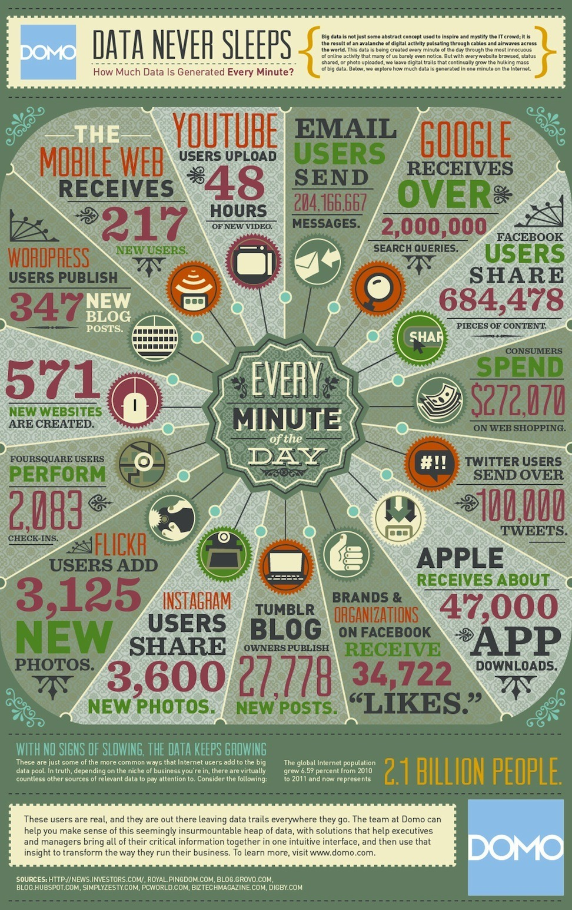
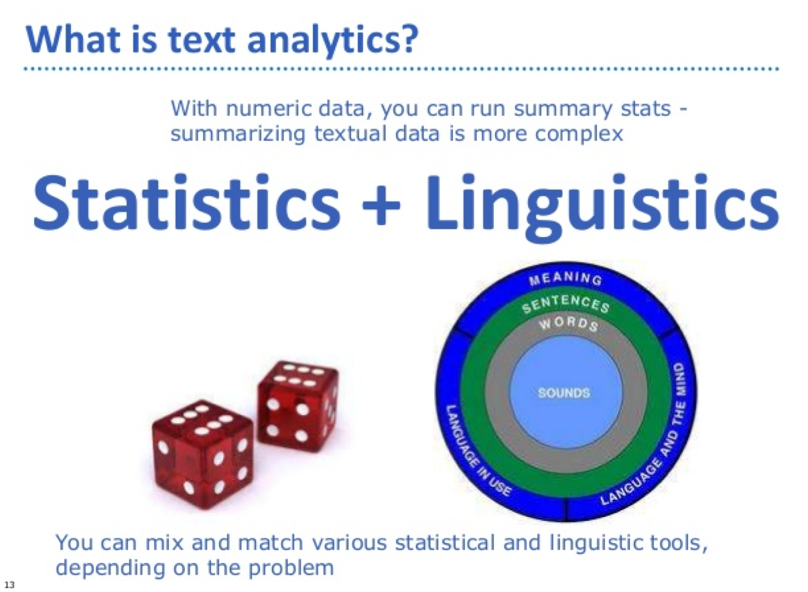

Linguistic Analysis and Data Science
week.1.warmup
謝舒凱 Graduate Institute of Linguistics
Associate Professor, National Taiwan University
這堂課的教練團
謝舒凱 Aber 德國杜賓根大學計算語言學博士|中研院語言學研究所博士後研究員| 台灣大學語言學研究所副教授
施孟賢 Simon 台灣大學語言學博士班
張瑜芸 Taco 台灣大學語言學博士班

教練對你們的期待：2H2M
- MOOC [自主學習] 能否從容面對新的知識技術？
- MAKE [手作創造] 能否口手合一？
- HACK [效率改變] 能否自己找出解決辦法？
- Humanities [鑑賞與溝通] 人文社會關懷 終極目的 倫理思考
妳活著的時代背景：Data is the KING

妳活著的時代背景：不管妳喜不喜歡
嵌入、穿戴、社群、、、
- 當人都變成了巨量數據的集合
- 物聯網，車聯網，衣聯網，腦聯網
Data, Information, Knowledge
- 不同類型的數據
Biological signals, music, images, video, customer reviews, webpages, medical records, software, game logs, social networks, environmental signals, astro-data, neuron spikes, etc.
- Symbolic and Signal data
Data Science 在做什麼
This frontier is expanding vastly thanks to new developments in mathematical modelling, algorithms, data management and computing infrastucture. It is having a profound impact not only in science and medicine, but also in e-commerce, marketing, humanities and society at large. Inference and learning with massive datasets is also the key ingredient of the intelligent machines of the future.
一句話：把數據變成資訊以供預測應用的科學
Text analytics / Text mining / NLP / Machine Learning 又是啥
文本數據分析：（DS 的一支）利用 NLP + ML 對於文本數據做各種預測與應用
- [Data Science] Linguistic/textual
dataprocessing - [Natural Language Processing] Linguistic/textual
informationprocessing - [Semantics, Ontologies, AI and Language Understanding] Linguistic/textual
knowledgeprocessing
DS 和語言分析有什麼關係

This course will provide an introduction to this exciting growing cross-disciplinary field. It will teach the basic principles and skills required for analysing textual data in a programmable way: finding linguistic patterns, dimensionality reduction, clustering, classification and prediction. Students will also have the opportunity of learning R and command-line programming.